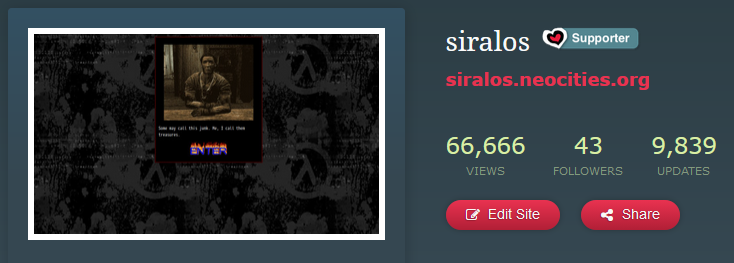

update log
According to Neocities, this site was created on 9 February 2017! I didn’t start tracking updates until August 2019, however.
30 April 2020
- Updated about/reagspace and added a gallery
- Updated links and archive pages with new layouts
- Removed kewl stuff, VIP
29 April 2020
Redesigned main page somewhat and changed/removed some pages.
19 March 2020
Weird time in the world rn.
- Updated index
- Updated Hypmic page with new album
21 February 2020
It’s been awhile!
- Updated index
- Updated Hypmic page
4 February 2020
I made a Mastodon account!! Feel free to follow me! ^o^
- Updated index
- Updated 𝓴𝓮𝔀𝓵 𝓼𝓽𝓾𝓯𝓯
- Updated links page
2 February 2020
- Updated index
- Updated old updates page
- Updated about
- Updated archive
1 February 2020
Oh worm, it’s February already.
- Created links page
28 January 2020
Finally started my new job. Interesting stuff, I tell ya.
- Created Jerma page
- Updated Hypmic page
- Fixed Reagspace layout
17 January 2020
- Updated Reagspace with a f r e s h new look
- Finally made a proper layout for updates page
15 January 2020
- Updated archive
- Updated 𝓴𝓮𝔀𝓵 𝓼𝓽𝓾𝓯𝓯 page
- Updated about
13 January 2020
Pages should (key word: should) now have functioning mobile views!
- Updated index
- Updated archive
- Updated/fixed VIP
- Updated Reagspace
12 January 2020
- Added guestbook!!
- Updated index
- Updated about page
- Moved gallery onto about page – gotta avoid looking too narcissitic, right? ;)
10 January 2020
Updated Vocaloid page and gave the index page a mobile…ish view.
7 January 2020
Created Vocaloid fan page! I love putting off my to-do list and making other random stuff instead. :^)
5 January 2020 (part 2)
Created/updated:
- Index
- Updates
- ~Very important~ page
5 January 2020
First update of 2020! Updated a few pages:
- Index
- About
- Gallery of me :3c
- Hypmic page
- Random shit
26 December 2019
Finally been working on the site again. Directories cleaned and many pages have been updated.
Have also decided to rebrand from siralos -> reagnyan. Feel free to change links, but I’ve also made it so siralos.neocities.org will lead back to here.
12 December 2019
Reached 66,666 views! Thanks to all who’ve visited. :3

25 October 2019
Added gallery of ME! Because why not.
17 October 2019, part III
Archive added. Needs an update, but at least it’s here.
17 October 2019, part II
Instead of working on WIP pages I felt like making some concept/aesthetic galleries. Not too sure why but it happened.
17 October 2019
Decided to become a Neocities supporter again :D Finished up “about†page as well.
8 October 2019
Decided to update Neocities as it’s better than nothing.
3 October 2019
Design finalised a bit more. Have decided to go for unique page styles this time, as opposed to using one style for most pages.
1 October 2019
Work on new layout started.
24 September 2019
Cleaned up and changed directory structure a bit; updated nav and sitemap to reflect this.
They were showing Promare in my local theatre yesterday (much to my surprise – my city is outside of the GTA) so that was pretty cool; I enjoyed it a lot. It was very tropey-but-self-aware animes and had some predictable plot points, but was still incredibly entertaining with some absolutely stunning visuals. Solid 8 outta 10 in my book.
18 September 2019
Updated index, archive, and hypmic page. Still working on the mobile layout.
I’m sort of wondering if I should return to the previous layout, just use frames for navigation instead this time. Hmmm.
15 September 2019
Finally fixed up the site for mobile viewing, at least to a usable degree.
I definitely recommend reading up on CSS flexbox (1, 2) and grid (1, 2) if you haven’t before. Flexbox allows what its name implies: easy-to-use flexible boxes, which can be set to display in a column or row, with wrapping or not, even spacing, different directions, and other values which make it great to use.
On the other hand, grid is also self-explanatory; it provides a grid for page elements to be positioned within. I like using it for layouts as you can use it to designate sections (ex. footer, header, main), then align them wherever in the grid regardless of their actual position within the HTML. This is useful for making mobile layouts with @media only screen and (max-width: x) values – for desktop viewing/larger displays, you can use a 2-column grid and designate a “nav†area to appear on the left, while on smaller displays you can instead change to a single-column grid and move “nav†to the top of the page. I’m not great at explaining this, but it should be visible if you resize this page.
These are both newer CSS values so they won’t work on older browsers (I’ve had problems in my XP VMs with Chrome and Firefox), but I don’t really consider this an issue as people shouldn’t be using these anyway due to security vulnerabilities. Older browsers usually don’t support newer SSL protocols either, so many sites (like Neocities) can’t even be viewed in the first place.
9 September 2019
Finished up Hypmic fanpage, though it’s kinda already outdated as Hypmic just released new characters and music. Well, I’ll get around to it soonish.
Also added a fanpage for Petz 5! I saw someone else sharing their Petz (can’t find it tho) and it inspired me to boot up the game in my VM. Petz 5 actually had a webpage creator (Petz Publisher) within the game, so I decided to make my page with it for an authentic 2002 Petz experience lol
Already displeased with the new layout. I really don’t know what I want to do with the site -_-; Regardless, it’s apparently been 2 years and 7 months since I originally made siralos. Time really passes.
8 September 2019
Happy birthday to me! I’m now the elderly age of 20.
Finally created a sitemap; it can also serve as alternative navigation if you don’t have frames enabled. I still need to fix the CSS and optimise for mobile viewing, but I’m feeling lazy today.
7 September 2019 - Part 2
Revamped layout again. Still a WIP, but it’s good enough for now as I mostly just need to finish mobile compatibility andd fix a few things. It still uses frames, but I made it so navigation loads in a frame instead of the actual page content.
I’d like to change the colour scheme, but not too sure what I want it to be. I named the theme “junko†after the pixel of her in the sidebar, so maybe I’ll go for black/red/white to match.
I’m also craving Subway rn. I got a coupon book from them that gave me a discount code for Doordash, but Subway apparently doesn’t even do Doordash in my area. WHY DID YOU SEND ME THIS DISCOUNT CODE. Companies have no respect for the people who live outside of the GTA :pensive:
7 September 2019
Changes made to navigation. Still thinking over what to do with the layout.
Been working on some random things that’ll I’ll probably upload once I’m satisfied, shown below:
The first one is a mimic of a friendproject/myspace page bc that inspired me the other day, and the second is the WIP for my Vocaloid fanpage. I’ve also almost finished my Hypmic fanpage, just need to find the will to work on it lol.
Tomorrow is my birthday… not sure what I plan to do yet. Might hit up the bar (there’s apparently a barcade downtown that I have yet to visit), but will probably just stay home and work on webpages as usual lol.
3 September 2019
Changes made to splash page and index frame; removed site footer as it wasn’t really needed on everything.
Already thinking of making a new layout… I’m honestly not too fond of working with frames. However, I hate working with JS even more and it’s hard to find a way for the site layout and navigation to maintain consistent across all pages when working with a static web host. Hmm… maybe the solution is for the site to lack consistency and have every page be unique? Hmmmmmmmmmmmmmmmmm. More thinking is needed.
2 September 2019
Shit, it’s September already.
Changed directory structure around; thank fuck Neocities finally lets you rename and move files (this was one of the reasons I switched to mainly working on my own server). I’ve also been working on a fanpages section, but it’s still a heavy work in progress.
Games list has also been updated as I’ve finished Danganronpa 2 – I loved the absurdity of the last chapter, and I also got to see my wife Junko again. :,) Have also started Doom 2016, which surprisingly runs extremely well with Proton on Linux. Thank you Valve for integrating Wine into Steam so we don’t have to go through convuluted prefix setups and/or fucking around with Playonlinux anymore. I used to game exclusively on Linux years ago, and it was always definitely… quite the ride getting Windows games to work.
27 August 2019
Updated words page. Even I’m unsure what exactly this page is supposed to contain, but I guess it’s a combination of me rambling (akin to a blog) and me trying to mentally generate genuine readable content.
In other news, having to resort to frames for Neocities makes me miss PHP. My poor server-side scripting… ;__; Yeah I know Javascript is always an option, but browser-based scripting is annoying and would violate my personal commitment to rejecting JS wherever possible. Such is life…
26 August 2019
Updated a few pages. Also made some minor changes to the site layout, mostly in regards to mobile viewing.
25 August 2019
Decided on a late-night site revamp after playing Danganronpa 2 for almost 5 hours. I’m still declaring it a WIP for now (mostly in regards to colours/banner), but it’s complete enough for me to show to the world now.
As fun as the last layout was, it was a bit too much for me, even though I was the person who brought it to life. tbh I kinda feel the whole ironically bad/nostalgic layout thing is a bit overdone – there are tasteful implementations of the style for sure, but mine just felt tacky. That being said though, I think the splash page will stay bc it adds a bit of gap moe. :^)
As always though, there will probably be another redesign in the future – I estimate 1 or 2 months, maybe even less. I’m never satisfied with any layout for long.
24 August 2019
Recently switched to using frames again. Yeah I know, it’s bad form in 2k19, but this is a static web host so what can I do -_-; Makes changing the site layout slightly easier on my end, at least.
Have also been thinking of changing out the layout again. It’s fun using a chaotic, glittery and gif-filled site, but it’s a bit too over the top for my ever-changing tastes. I usually tend to lean towards more simple, minimal-ish designs when I design pages, so that’s probably why… If anything though, I’ll probably just swap out the backgrounds and fonts, and then remove some images and borders to give it a nice simplistic feel.
30 July 2019
FUCK WEB DESIGN! FUCK JAVASCRIPT! FUCK SOCIAL MEDIA! FUCK THE MODERN WEB! THE TIME TO EMBRACE HELL IS NOW


{kind=link}
{kind=link}